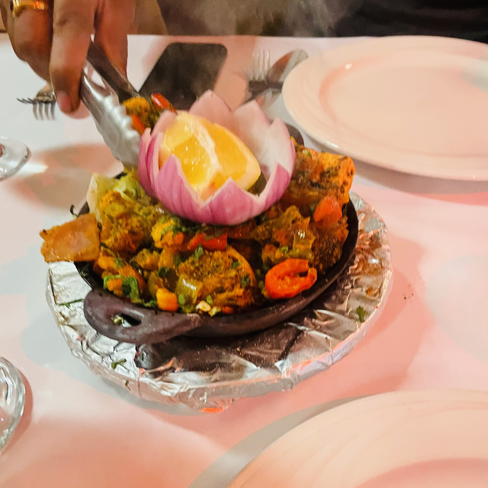
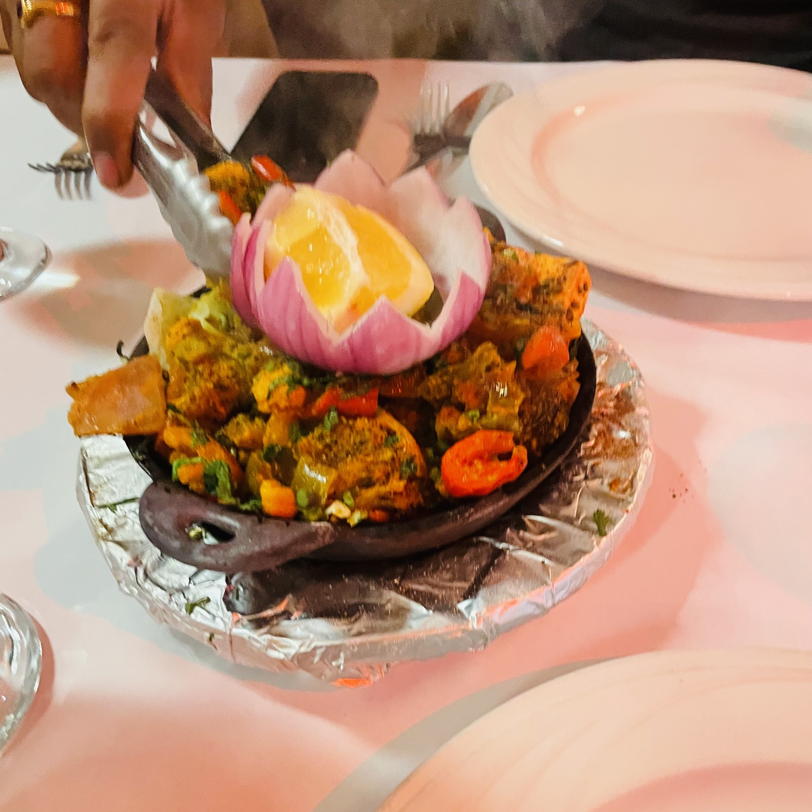

Shrika Nivarti
 

Shrika is a very dedicated and lively person who has a lot of hobbies such as cooking, baking, art, swimming, and football. She is quite familiar with coding and knows SQL, Python, and has been to a data science lab. Shrika is planning on majoring in medicine but is still interested in engineering. Shrika has made substantial contributions to the project, showcasing her proficiency by not only crafting her dedicated page but also architecting the intricacies of the login and signup pages. In addition, she has meticulously undertaken the formatting and coding of the projects page, demonstrating a comprehensive involvement in multiple facets of the development process.